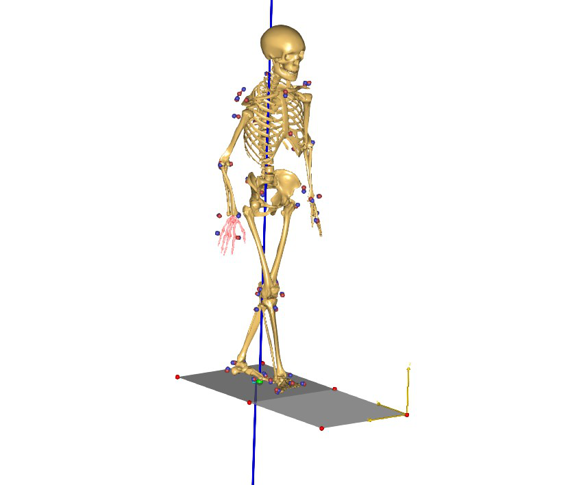

ADL Gait (beta)¶
Fullbody MoCap model with multiple subjects and trials based on the “Rehazenter Adult Walking Dataset” by Schreiber and Moissenet (2019).
See also
Model file location in AMMR:
The model has 50 subjects and 1145 trials. Subjects walk at five different speeds (conditions) C1: 0–0.4 m/s, C2: 0.4–0.8 m/s, C3: 0.8–1.2 m/s, C4: a self-selected spontaneous speed, C5, self-selected fast speed.
The dataset uses 53 reflective markers and measured ground reaction forces. A standing reference trial is used to identify a number parameters:
Segment lengths
Tibial torsion angle
Varus-valgus angle
Unconstrained marker positions
These parameters are then loaded in the matching dynamic trials.
Warning
The model is a starting point for analysing the “Rehazenter adult walking dataset”. The model has not been through any kind of validation or publication. It is likely that some results will not be correct without further adjustments.
Choices of model parameters are in some cases arbitrary as this model is a work in progress. If you come up with improvements to the model please share them back.
The model was created by Enrico De Pieri, Anderson de Souza Castelo Oliveira, and Morten Enemark Lund but has not yet been used for publication.
Dataset¶
The full “Rehazenter adult walking dataset” is not distributed with the model. Schreiber and Moissenet (2019) has released the data under a Creative Commons license (CC BY 4.0).
You must download the data sepearately from this model:
After downloading extract the data into the C3DFiles sub folder.
Model structure¶
The model files are structured so each trial has its own folder with a main file
(Main.any) and a file with trial specific data (TrialSpecificData.any).
The C3D files are placed together in a separate folder.
The model is structured as outlined below:
Application/MocapExamples/ADL_Gait_[beta]
│ libdef.any
│ C3DSettings.any
│ BodyModelConfig.any
│ ExtraDrivers.any
│ ForcePlates.any
│ MarkerProtocol.any
│ LabSpecificData.any
│
├───C3DFiles\
| │
| ├───2014001\
| | 2014001_C1_01.c3d
| | 2014001_C1_02.c3d
| | ..
| | 2014001_ST.c3d
│ |
| └───2014002\
│ ..
│
├───Output\
│
└───Subjects\
│
├───2014001\
│ | SubjectSpecificData.any
| |
│ ├───2014001_C1_01\
| | Main.any
| | TrialSpecificData.any
| :
| |
│ └───2014001_ST\
| Main.any
| TrialSpecificData.any
│
└───2014002\
| SubjectSpecificData.any
|
├───2014002_C1_01\
| Main.any
| TrialSpecificData.any
:
Batch processing¶
The model also contains a batch processing Python script for running all models. The script
batchprocess.py is located in the top-level folder.
To use the scirpt install the Anaconda Python Distribution.
The script uses the AnyPyTools library for working with the AnyBody Model System (Lund 2019). The library can be installed with:
conda install -c conda-forge anypytools
Then run the following command in the model folder:
python batchprocess.py
Note
You may need to modify the script to output the variables you are interested in. It may also be necessary to modify the number parallel AnyBody instances to match the number of licenses you have.
Bibliography¶
Please cite the following paper when using the data.
> Schreiber, C., Moissenet, F. A multimodal dataset of human gait at different walking speeds established on injury-free adult participants. Sci Data 6, 111 (2019). https://doi.org/10.1038/s41597-019-0124-4
